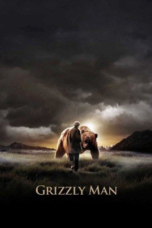
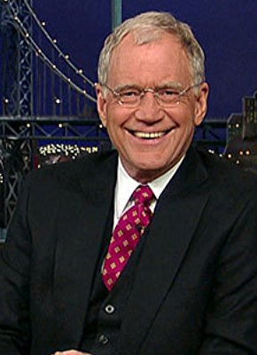

#3318 Grizzly Man
 
 IMDB-Wertung: 7.8 / 10
IMDB-Wertung: 7.8 / 10  Metascore: 87
Metascore: 87 
Der Katmai-Nationalpark in Alaska ist ein scheinbar friedliches Idyll. Doch hier leben mit Grizzlybären einige der größten und gefährlichsten Raubtiere der Welt. Ein Mann hatte allerdings vor ihnen keine Furcht. Vielmehr glaubte er sogar, sie wären seine Freunde. 13 Jahre lang lebte Timothy Treadwell unter Grizzlybären - bis er von einem getötet wurde.
Jahr: 2005
Dauer: 104 Minuten
FSK:
Land: USA Studio: Lions Gate FilmsTonspuren: DTS - ,
Untertitel: Englisch,
Auflösung: 1080p (1920x1080) Größe: 8468 MB
Genre: Dokumentation, Biographie
Regisseur:  Werner Herzog
Werner Herzog
Drehbuch: Werner Herzog
Soundtrack: Richard Thompson
Darsteller:
 Werner Herzog als Himself / Narrator / Interviewer
Werner Herzog als Himself / Narrator / Interviewer-  David Letterman als Himself , archive footage
- Jewel Palovak als Herself
- Warren Queeney als Himself - Actor and Close Friend
- Timothy Treadwell als Himself , archive footage
- Val Dexter als Himself - Treadwell's Father
- Sam Egli als Himself - Egli Air Haul
- Franc G. Fallico als Himself - Coroner
- Willy Fulton als Himself - Pilot
- Marc Gaede als Himself - Ecologist
- Marnie Gaede als Herself - Ecologist
- Sven Haakanson Jr. als Himself - Alutiiq Museum Director
- Amie Huguenard als Herself , archive footage
- Kathleen Parker als Herself - Close Friend
- Larry Van Daele als Himself - Bear Biologist
Datei: X:\Dokumentationen\Tiere\Grizzly Man (2005, FSK, 1920x1080).mkv seit 11.03.2016
Festplatte: HD Serien(SU-Z)+Dokus+Musik
 Es gibt insgesamt 37 Filme in der Gruppe 'Dokumentationen\Tiere'
Es gibt insgesamt 37 Filme in der Gruppe 'Dokumentationen\Tiere'